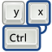

|  | Keymap Quirk Debugger |
Back to the main keymap page
The APCI layer (and other hardware) emits events that are usually handled by system daeons such as acpid and lineakd. This interface is broken and depricated, and we have a good framework in the kernel for key presses, INPUT. Using INPUT also allows us to use the existing frameworks and do all the policy and configuration using standard tools and standard frameworks.
Using INPUT allows us to remap keys using the setkeycode ioctl.
This is a good thing as it lets us remap keys from KEY_FN_F4 to KEY_BRIGHTNESSUP.
This allows stuff like gnome-power-manager, HAL and X11 do the right thing when
the button is pressed, rather than having to remap it by hand or editing config files.
We can match the laptop make and model into hal-info and automatically make the keys do the right thing. To do this we need to map from hardware events (virtual scancodes) into keycodes. The virtual scancodes are listed in the tables below.
All the entries should look something like:
<match key="input.product" string="Sony Vaio Keys">
<match key="/org/freedesktop/Hal/devices/computer:system.hardware.vendor" prefix="Sony">
<match key="/org/freedesktop/Hal/devices/computer:system.hardware.product" string="VGN-S1XP(GB)">
<append key="input.keymap.data" type="strlist">0x0d:mute</append> <!-- Fn+F2 mute -->
<append key="input.keymap.data" type="strlist">0x0e:volumedown</append> <!-- Fn+F3 mixer down -->
<append key="input.keymap.data" type="strlist">0x0f:volumeup</append> <!-- Fn+F4 mixer up -->
<append key="input.keymap.data" type="strlist">0x10:brightnessdown</append> <!-- Fn+F5 brightness up -->
<append key="input.keymap.data" type="strlist">0x11:brightnessup</append> <!-- Fn+F6 brightness down -->
<append key="input.keymap.data" type="strlist">0x12:switchvideomode</append> <!-- Fn+F7 switch crt/lcd -->
<append key="input.keymap.data" type="strlist">0x17:suspend</append> <!-- Fn+F12 hibernate -->
<append key="info.capabilities" type="strlist">input.keymap</append>
</match>
</match>
</match>
If you are using a thinkpad and you want to do driver matching you'll
need to install a very new kernel (2.6.23) with the updated thinkpad-acpi driver.
Driver matching (using MSC_SCAN) is needed when the ACPI event is propogated
through evdev but is unknown.
You can find a working external snapshot (totally unsupported) here.
You can see the existing thinkpad-acpi keymaps here.
| ThinkPad Event | Description |
|---|---|
| 0x00 | Fn F1 |
| 0x01 | Fn F2 |
| 0x02 | Fn F3 |
| 0x03 | Fn F4 |
| 0x04 | Fn F5 |
| 0x05 | Fn F6 |
| 0x06 | Fn F7 |
| 0x07 | Fn F8 |
| 0x08 | Fn F9 |
| 0x09 | Fn F10 |
| 0x0a | Fn F11 |
| 0x0b | Fn F12 |
| 0x0c | Fn Backspace |
| 0x0d | Fn Insert |
| 0x0e | Fn Delete |
| 0x0f | Fn Home |
| 0x10 | Fn End |
| 0x11 | Fn Page Up |
| 0x12 | Fn Page Down |
| 0x13 | Fn Space |
| 0x14 | Volume Up |
| 0x15 | Volume Down |
| 0x16 | Mute |
| 0x17 | Thinkpad Button |
If you are using a new sony laptop and you want to do driver matching you'll
need to install a very new kernel (2.6.23) with the updated sony-laptop driver.
You can find a working external snapshot (totally unsupported) here.
You can see the existing sony-laptop keymaps here.
| Sony Event | Description |
|---|---|
| 0x07 | Capture Pressed |
| 0x08 | Capture Released |
| 0x09 | Capture Partialpressed |
| 0x0a | Capture Partialreleased |
| 0x0b | Fn Esc |
| 0x0c | Fn F1 |
| 0x0d | Fn F2 |
| 0x0e | Fn F3 |
| 0x0f | Fn F4 |
| 0x10 | Fn F5 |
| 0x11 | Fn F6 |
| 0x12 | Fn F7 |
| 0x13 | Fn F8 |
| 0x14 | Fn F9 |
| 0x15 | Fn F10 |
| 0x16 | Fn F11 |
| 0x17 | Fn F12 |
| 0x18 | Fn 1 |
| 0x19 | Fn 2 |
| 0x1a | Fn D |
| 0x1b | Fn E |
| 0x1c | Fn F |
| 0x1d | Fn S |
| 0x1e | Fn B |
| 0x1f | Bluetooth Pressed |
| 0x20 | Pkey P1 |
| 0x21 | Pkey P2 |
| 0x22 | Pkey P3 |
| 0x23 | Back |
| 0x26 | Bluetooth On |
| 0x27 | Bluetooth Off |
| 0x28 | Help Pressed |
| 0x29 | Fn Only |
| 0x32 | Zoom Pressed |
| 0x33 | Thumbphrase Pressed |
| 0x34 | Meye Face |
| 0x35 | Meye Opposite |
| 0x36 | Memorystick Insert |
| 0x37 | Memorystick Eject |
| 0x38 | Any Button Released |
| 0x3b | Fn Released |
| 0x3c | Wireless On |
| 0x3d | Wireless Off |
Back to the main keymap page